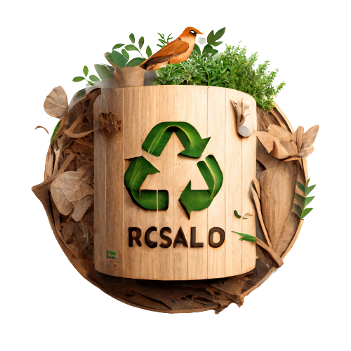

Taste the felling of
a ZeroWaste
texto texto texto texto texto texto texto texto texto texto textotextotextotextotextotextotextotextotextotextotextotexto
Saiba mais


texto texto texto texto texto texto texto texto texto texto textotextotextotextotextotextotextotextotextotextotextotexto
Saiba mais